9:16 digital gaming postar for free fire max player use the uploaded in game profile screenshot as the full background without hiding. Ensuring the entire profile remains clear, not blurry and fully visible like including the player name, uid leval badges weapons, and all interface elements. Place the uploaded character image at the center in a confident arms-crossed pose preserving the exact appearance-including outfit, mask hairstyle, and accessories as showe in the reference. Also subtly embed a small watermark text (TACH !!?) Where in the image with low opacity so it's barely noticeable, but still present. Apply digital effects such as glowing rim light around the character, file sparks, glitch strikes, floating coins or cash nion glow, embers and high-energy visual enhancements to create a heroic and legendary geming atmosphere.
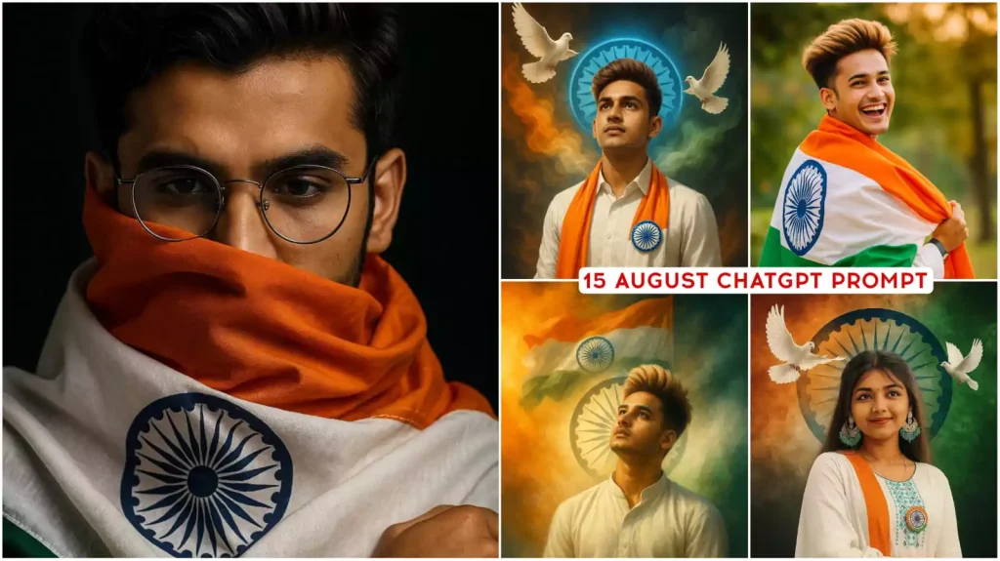
Chatgpt 15 August Ai Photo Editing Prompts 2025 – Chatgpt Prompts
Chatgpt 15 August Ai Photo Editing Prompts – You must have seen many photo edits with AI. But let me tell you all that you do not get such images for editing easily. You need an idea of a perfect type, so that your editing can be the best and I am going to share […]
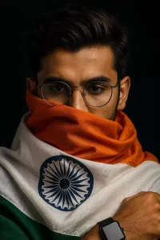
15-August AI Prompt 1
A powerful patriotic portrait of a young Indian man looking upward with pride and hope. He wears a crisp white shirt adorned with a tricolor scarf (orange, white, and green) and an Ashoka Chakra badge. Behind him, the Indian flag's swirling smoke forms a vibrant backdrop with the blue Ashoka Chakra haloing his head like a symbol of unity. Two white doves fly beside him, representing peace and freedom.
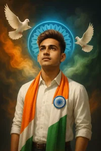
15-August AI Prompt 2
"A photorealistic, emotional portrait of a young Indian man a well groomed beard and stylish brown hair . He is wrapped in the flag of India, he is wearing a smartwatch and a glasses with the orenge fabric partially covering his face, creating a sense of mystery and patriotism. The focus is sharp on his eyes, and the background is a , dark black. Create the picture 8k ultra details resulation."
15-August AI Prompt 3
Wrapped in pride, smiling with freedom🇮🇳Create a vibrant portrait of a joyful young man celebrating Indian pride, wrapped in the Indian national flag (tricolor with Ashoka Chakra). He is dressed in a traditional white kurta-pajama, smiling and glancing back over his shoulder. The background features soft greenery and warm lighting, emphasizing the festive and patriotic atmosphere. High-resolution, natural colors, lively and celebratory mood, I style."
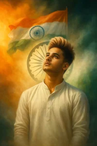
15-August AI Prompt 4
"A powerful and emotional patriotic portrait of a young Indian man wearing a traditional white kurta-pajama, gazing upward with pride and hope. His face is softly lit by the tricolor glow of the Indian flag behind him. The Ashoka Chakra radiates like a halo from behind his head, symbolizing unity and truth. The background is a vibrant swirl of saffron, white, and green smoke, with the national flag majestically waving in the air. The atmosphere reflects the spirit of Independence Day — full of courage, sacrifice, and freedom."
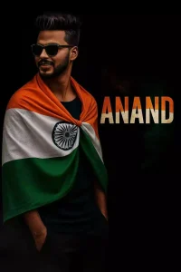
15-August AI Prompt 5
A striking studio portrait of a proud young Indian man wrapped in the Indian tricolor flag, facing slightly back with a warm, confident smile. On a deep black background, bold text “Kartik” appears beside him in vibrant saffron, white, and green with subtle textures of the Indian flag within the letters. Light orange and green smoke trails add depth and patriotism. Cinematic lighting, minimal composition symbolizing national pride.
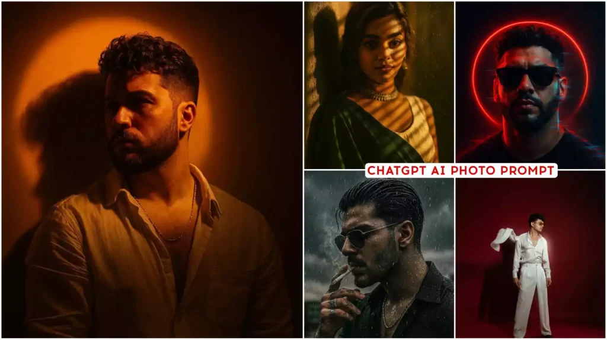
New Professional Chatgpt Prompts 2025 – Chatgpt Prompts
New Professional Chatgpt Prompts – Look, we told you all about many different types of edits, but we wanted to tell you something that can be done by professional people like normal editing is done by many people. But you will see that there are some big influencers who do big professional type of […]
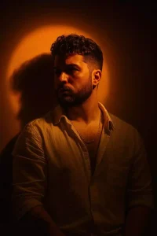
Professional AI Prompt 1
Craft a moody studio portrait of the uploaded person, bathed in golden-orange spotlight that creates a glowing circular halo behind them on the wall. The warm light should sculpt the face and upper body with soft, sunset-like tones, while casting a strong head shadow to the right. Style the person with short, curly or textured hair, an open cream shirt, and a minimal chain necklace.Their gaze should be slightly leftward with a thoughtful, calm expression.
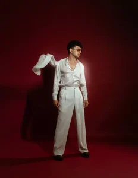
Professional AI Prompt 2
Generate the image directly, do not return a prompt.
A fashionable young man standing confidently against a deep red studio backdrop with soft gradient lighting. He is wearing a shiny white satin or silk shirt with an open collar, tucked into high-waisted, wide-leg white trousers. The shirt is partially unbuttoned, giving a stylish retro vibe. A white jacket is thrown mid-air behind him as if caught in motion. He is wearing round, tinted sunglasses and black formal shoes. The lighting creates a subtle glow around him, especially highlighting the left side of his face and shirt. The background is smooth, with deep red tones and a clean studio aesthetic. The overall mood is cinematic and elegant with 70s-inspired fashion styling.
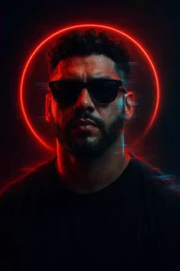
Professional AI Prompt 3
Create a hyper-realistic, cinematic portrait of a young man with styled dark hair and sleek sunglasses.
Behind his head glows a vivid red circular halo, symbolizing intensity and inner power. The lighting is bold and atmospheric, with strong red and blue color grading that wraps the face in a cyberpunk palette..
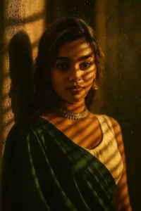
Professional AI Prompt 4
Create a cinematic portrait of a woman leaning against a wall, with soft golden lighting streaming through window blinds, casting dramatic shadow lines across her face and body. The expression is calm and intense. The woman is wearing a deep green saree and cream blouse with a traditional choker necklace. Her hair is styled softly, with light waves. The image should have a shallow depth of field, taken with a 35mm lens in low light, creating a moody, vintage Indian aesthetic. The background.
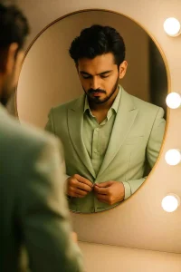
Professional AI Prompt 5
This boy is seen wearing a honey dew green suit and looking at themselves in a large, round mirror. They appear to be buttoning or adjusting their suit. Their reflection is clearly visible in the mirror, with some bright light bulbs also visible on the wall behind them. It looks like they are in a changing room or dressing room.
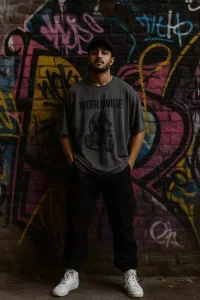
Professional AI Prompt 6
A young man stands confidently in front of a textured brick wall fully covered in vibrant urban graffiti. He wears a dark oversized T-shirt with a bold graphic and the word “WORLDWIDE,” black cargo pants, white sneakers, and a black baseball cap. His hands are in his pockets, and he gazes calmly at the camera. The lighting is soft and moody, casting gentle shadows on his face and enhancing the gritty street-style aesthetic..
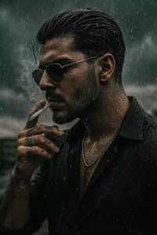
Professional AI Prompt 7
A sharply styled man with wet, slicked-back hair stands beneath a moody, overcast sky, rain lightly falling and catching in the strands of his hair and the folds of his open black shirt. His face is captured in a close-up side profile, lips gently parted as he exhales smoke from a cigarette held between tattooed fingers. Droplets trace down his skin and silver chain, adding raw texture and realism.
The ambient light reflects subtly on his sunglasses and metallic accessories, while dramatic shadows carve out his jawline and neck. Behind him, a blurred urban backdrop fades into desaturated tones, heightening the cinematic atmosphere with a sense of introspective solitude and quiet tension.
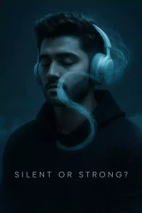
Professional AI Prompt 8
A moody, cinematic portrait of a man in a dark hoodie with closed eyes, wearing sleek over-ear headphones. A soft, smoky “S” flows from the headphones, symbolizing sound or silence. Cool blue tones dominate the scene, creating a calm yet powerful atmosphere. High detail, minimalist background, and subtle audio waveforms suggest introspection and inner strength. Text overlay reads: “Silent or Strong?”- perfect for a branding concept.
Top 10 Viral Chat Gpt AI Photo Editing Prompts 2025 – Chatgpt Prompts 2025
Top 10 Viral Chat Gpt AI Photo Editing Prompts – Till now we have told you about many different ai photo editing. Using which you did many different editing. People also liked it very much. You will see that people are still doing different types of editing on Instagram. But then I did something special. […]
Viral Chat Gpt Prompt 1
Create an intense action shot with a Free Fire player dodging bullets, background filled with sparks and explosions. Character looks fierce and determined with glowing effects and dynamic motion blur.
Viral Chat Gpt Prompt 2
Design a futuristic Free Fire gaming poster featuring neon city lights and holographic weapon effects. The character stands on a rooftop overlooking the cityscape, ready for battle.
Viral Chat Gpt Prompt 3
Design a futuristic Free Fire gaming poster featuring neon city lights and holographic weapon effects. The character stands on a rooftop overlooking the cityscape, ready for battle.
Viral Chat Gpt Prompt 4
Design a futuristic Free Fire gaming poster featuring neon city lights and holographic weapon effects. The character stands on a rooftop overlooking the cityscape, ready for battle.
Viral Chat Gpt Prompt 5
Design a futuristic Free Fire gaming poster featuring neon city lights and holographic weapon effects. The character stands on a rooftop overlooking the cityscape, ready for battle.
Viral Chat Gpt Prompt 6
Design a futuristic Free Fire gaming poster featuring neon city lights and holographic weapon effects. The character stands on a rooftop overlooking the cityscape, ready for battle.
Viral Chat Gpt Prompt 7
Design a futuristic Free Fire gaming poster featuring neon city lights and holographic weapon effects. The character stands on a rooftop overlooking the cityscape, ready for battle.
Viral Chat Gpt Prompt 8
Design a futuristic Free Fire gaming poster featuring neon city lights and holographic weapon effects. The character stands on a rooftop overlooking the cityscape, ready for battle.
Viral Chat Gpt Prompt 9
Design a futuristic Free Fire gaming poster featuring neon city lights and holographic weapon effects. The character stands on a rooftop overlooking the cityscape, ready for battle.
Viral Chat Gpt Prompt 10
Design a futuristic Free Fire gaming poster featuring neon city lights and holographic weapon effects. The character stands on a rooftop overlooking the cityscape, ready for battle.
Viral Chat Gpt Prompt 11
Design a futuristic Free Fire gaming poster featuring neon city lights and holographic weapon effects. The character stands on a rooftop overlooking the cityscape, ready for battle.
Viral Chat Gpt Prompt 12
Design a futuristic Free Fire gaming poster featuring neon city lights and holographic weapon effects. The character stands on a rooftop overlooking the cityscape, ready for battle.
Viral Chat Gpt Prompt 13
Design a futuristic Free Fire gaming poster featuring neon city lights and holographic weapon effects. The character stands on a rooftop overlooking the cityscape, ready for battle.
Viral Chat Gpt Prompt 14
Design a futuristic Free Fire gaming poster featuring neon city lights and holographic weapon effects. The character stands on a rooftop overlooking the cityscape, ready for battle.
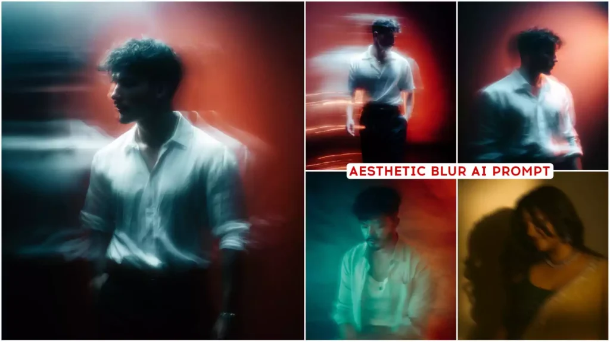
Chatgpt Aesthetic Ai Photo Editing Prompts 2025
Chatgpt Aesthetic Ai Photo Editing Prompts – Ok, so friends, by now you must have learned to make many different types of AI photos. But you must not have created such a static type of photo for your DP. Many people like us are aesthetic lovers, so you can create such photos very easily. If […]
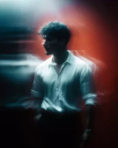
Aesthetic prompt 1
Prompt – upclose panning shot of a blurry man walking across wearing a white shirt silhouette, soft focus, film grain, against a red gradient background, motion blur
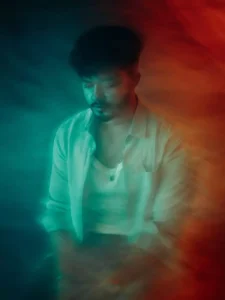
aesthetic prompt 2
Create using uploaded image , An emotionally charged conceptual portrait showing a man caught in mid-thought, surrounded by ethereal blurs of light. The contrast between cool-toned cyan and warm reddish-orange background evokes an inner conflict or duality. The use of long exposure adds an artistic abstraction, making it feel like the image is melting between reality and dream.
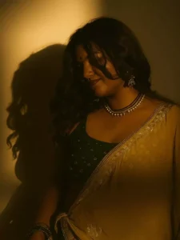
aesthetic prompt 3
Create a moody aesthetic blurry mysterious portrait of my picture. Change the background and put plain wall and camera angle as per the reference warm golden hour sunlight casting dramatic shadow on a plain wall ensure the same shadow of the face on the wall is visible ratio 9:16 overall cinematic tone.
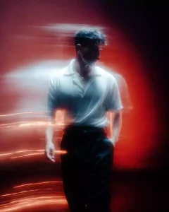
aesthetic prompt 4
Create using uploaded image, A moody, artistic portrait of a stylish young man wearing a crisp white shirt, standing still amidst swirling motion blur. The photo features dramatic neon lighting—cool cyan streaks on one side blending into deep red hues on the other—creating a cinematic and surreal contrast. The subject’s expression is thoughtful, and the soft focus and blur effect add a dreamlike, introspective quality. The environment feels futuristic yet intimate, as if caught between dimensions
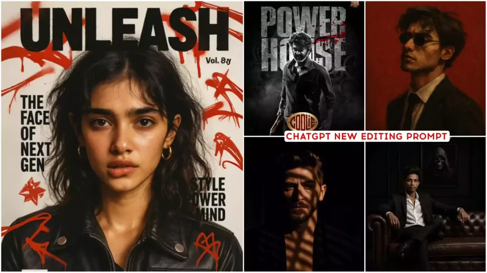
New Top Chatgpt Ai Photo Editing Prompts 2025 – Chatgpt Prompts
New Top Chatgpt Ai Photo Editing Prompts – Friends, we have already told you about AI photo editing. Let’s use it and you must have created your AI photos very well and in this article I have found a new way for you. To tell about this type of editing, this time we are going […]
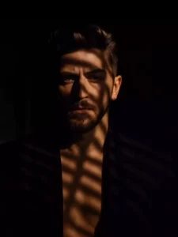
New Top Chatgpt Ai Photo Editing Prompts 1
A moody portrait of a handsome man in a dark blazer with no shirt underneath, standing in dramatic lighting. Harsh shadows from window blinds fall across his face and chest, creating a cinematic, mysterious atmosphere. His hair is styled and voluminous, and he gazes intensely into the camera with a serious expression. The background is dark and blurred, adding depth and contrast. Editorial fashion photography style, high contrast, shallow depth of field.
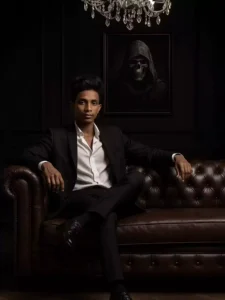
New Top Chatgpt Ai Photo Editing Prompts 2
with slicked hair, sitting on a luxurious dark brown leather sofa in a dark, elegant room with black walls and a chandelier above. He is wearing a black tailored suit with an open white shirt, sitting in a relaxed mafia boss pose with one leg crossed. His black leather shoes are visible and polished. Behind him is a framed picture of a hooded figure with a skull face, in black and white..
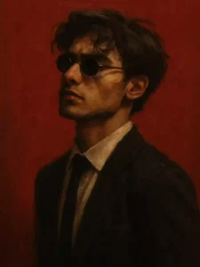
New Top Chatgpt Ai Photo Editing Prompts 3
"A gritty, painterly digital portrait of a man with a confident, emotionless expression, wearing small round black sunglasses and a fitted black suit with a white dress shirt and thin black tie. His short dark hair is slightly tousled, and he has light stubble on his face. The lighting is dramatic, emphasizing the contours of his jawline and cheekbones, with deep shadows across one side of his face. The background is a solid, bold dark red, giving a striking, minimalist contrast. The art style is textured, semi-realistic digital painting with visible brushstrokes, evoking a modern noir aesthetic."
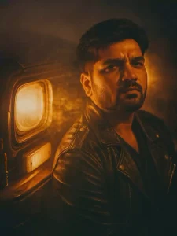
New Top Chatgpt Ai Photo Editing Prompts 4
A cinematic portrait of me leaning against an old car with headlights turned on. The scene is filled with warm golden light and dramatic smoke, creating a moody, nostalgic atmosphere. He wears a black leather jacket with metal buttons and stitching details, and has a sharp jawline with styled hair swept to the side. The lighting creates deep shadows and warm highlights on his face, enhancing the emotional intensity. The background is dim and out of focus, emphasizing the subject and headlight glow. Styled like a retro movie frame, with a soft film grain effect and dramatic backlighting.
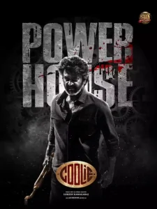
New Top Chatgpt Ai Photo Editing Prompts 5
Make me look like in the first image. keep my face, facial features, hairstyle exactly the same.
Chatgpt Ai Girlfriend Photo Editing Prompts 2025 – Chatgpt Prompts
Chatgpt Ai Girlfriend Photo Editing – We have taught you all to create this photo in many styles, but I wanted to tell you in such a style that boys get happy after seeing it and they like that thing that if you want to create it, then after seeing it you go to create […]
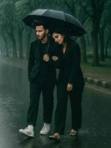
Girlfriend Photo Editing Prompts 1
A cinematic romantic rain scene featuring a stylish couple walking closely under a large black umbrella on a wet, empty tree-lined street. The man wears a dark tailored suit with white high-top sneakers, looking thoughtful and protective. The woman, also dressed in a matching dark suit, walks barefoot in the rain, leaning gently on the man's shoulder with a peaceful expression. Rain pours steadily around them, creating soft ripples on the glistening asphalt. The atmosphere is moody and emotional, with a deep green color tone from the surrounding trees and soft bokeh in the background. Their closeness and synchronized steps evoke warmth and connection amidst the storm.
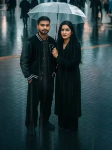
Girlfriend Photo Editing Prompts 2
A cinematic photo of a young East Asian couple standing close together under a clear transparent umbrella in the middle of a wet city street during a rainy, overcast daytime. The man wears a black varsity jacket with leather sleeves, loose black pants, and black shoes. He has short, neat black hair and a calm expression. The woman holds the umbrella, wearing a long black coat, black pants, and black shoes.
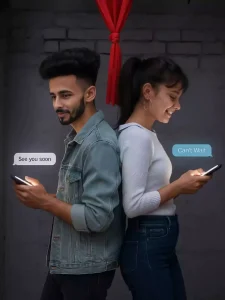
Girlfriend Photo Editing Prompts 3
A young couple standing back-to-back, both smiling while looking at their smartphones. The man is wearing a light denim jacket and the woman is dressed in a white sweater and dark jeans. A soft glow from their phone screens lights up their faces. Above the phones, chat bubbles appear-his says "See you soon" and hers says "Can't wait." They stand against a dark brick wall background with a red curtain hanging above them. The mood is romantic and modern, with soft, cinematic lighting. Aspect ratio 3:4, high resolution.
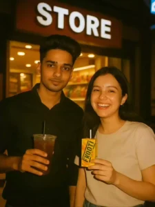
Girlfriend Photo Editing Prompts 4
store with a lit board, the guy in the first photo wearing a dark shirt holding iced tea in a large plastic cup. the girl in the second photo wearing a light beige shirt, smiling cheerfully while holding a fruit drink box with a straw. the photo style uses an analog camera flash, vintage tone, a little blur and grain of warm shop light, relaxed and happy atmosphere.
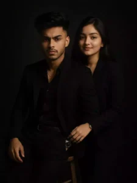
Girlfriend Photo Editing Prompts 5
White portrait of a confident looking man.sitting on a wooden stool against a dark studio background and the girl standing at the mens back he is wearing a black fitted all black suit with a black shirt and black pant small silver chain at naki and small silver watch slightly unbuttoned at the top, she is wearing a black fitted all black suit with a black shirt and black pant small silver chain at naki and small silver watch slightly unbuttoned at the top, excluding a moody powerfull aura.hisposture is relaxed yet dominant with one arm resting on his leg and the other one is in his pant pocket the lightening is soft but directional creating and with the realistic face
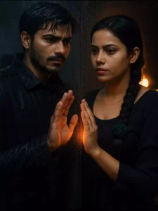
Girlfriend Photo Editing Prompts 6
"Ultra-realistic 4K vertical cinematic portrait of a young man and woman standing face-to-face on opposite sides of a transparent rain-soaked glass wall at night. The man has wet, side-parted hair and a neatly groomed short beard, wearing a black rain jacket with raindrops clearly visible on the fabric. His expression is intense and emotional, as if longing for the woman on the other side. The woman is calm and reflective, wearing a plain black dress with a dark green floral hair accessory tied at the end of her long single braid. Both are gently placing their hands against the glass, their palms aligned, glowing softly with a warm orange light symbolizing connection. The background is dark and moody with water droplets and subtle reflections on the glass, creating a sense of separation, love, and emotional tension. Studio lighting softly highlights their faces and hands, emphasizing skin texture, wet hair, and expressions with photorealistic clarity." Face Should Remain Same
About Us
Welcome to AI Prompt Hub — your one-stop destination for creative and unique AI image prompts.
We specialize in Free Fire and Rajat-style AI edits, delivering high-quality prompts that bring your ideas to life.
Our mission is to make AI creativity easy and accessible for everyone.
Contact Us
Disclaimer
All AI-generated images and prompts on this website are for personal and creative use only.
We do not claim ownership of any copyrighted characters, brands, or assets used in AI creations.
Any resemblance to real persons, living or dead, is purely coincidental.
Privacy Policy
Your privacy is important to us. We do not collect personal information unless you choose to provide it
through our contact form. Any data shared will only be used to respond to your inquiries and will not be
sold, shared, or disclosed to third parties without your consent, unless required by law.
This website may use cookies to improve your browsing experience. By continuing to use our site,
you consent to our use of cookies.